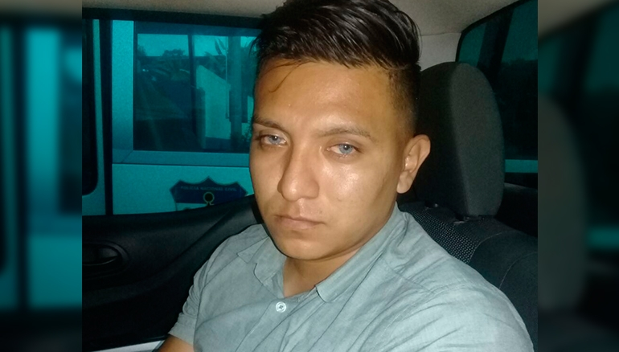

Periodico Digital
Nacionales
Anulan decisión de procesar en libertad a Vanda Pignato por simulación de delito
Cámara ordenó una audiencia especial para dictarle medidas a la exprimera Dama, quien se encuentra bajo custodia policial en un hospital del ISSS.
Veto presidencial a reforma Ley de Fiscalía favorece a lavadores de dinero
La Fiscalía lamentó el veto emitido por el presidente de la República y formuló un llamado a los diputados de los diferentes grupos parlamentarios para que lo superen.
Cae hombre por violación y tenencia de pornografía infantil en Ahuachapán
La Fiscalía ordenó un allanamiento en la vivienda del hombre con la finalidad de incautar todos los soportes tecnológicos.
Internacional
EE.UU reevaluará su relación con El Salvador tras acercamiento con China
La portavoz de la Casa Blanca, Sarah Sanders, insistió en que se trata de una decisión que afecta no solo a El Salvador, sino también a la salud y seguridad económica de toda la región de las Américas.
Muere el senador republicano John McCain, excandidato presidencial en 2008

Murió rodeado de sus seres queridos en Sedona (Arizona), un día después de que su familia anunciara que había decidido suspender el tratamiento de su cáncer cerebral.
Incertidumbre crece en venezolanos varados en la frontera norte de Ecuador

El viernes Ecuador confirmó la creación de un corredor humanitario para los venezolanos que se encontraban en la frontera norte y que tenían como destino final Perú.
Deportes
Alianza obtiene su primer triunfo en el Apertura al derrotar a Audaz
El conjunto capitalino llegó a este encuentro con cuatro empates consecutivos. En la próxima jornada se medirá ante Metapán.
Dembélé da victoria al Barcelona ante un Valladolid valiente y entregado
El Barcelona firmó su segundo triunfo en LaLiga Santander para convertirse en nuevo líder de la clasificación.
La UEFA sigue estudiando el VAR para sus competiciones
La implementación del VAR a escala europea presenta una serie de dificultades en las áreas operativa, de logística y de arbitraje.